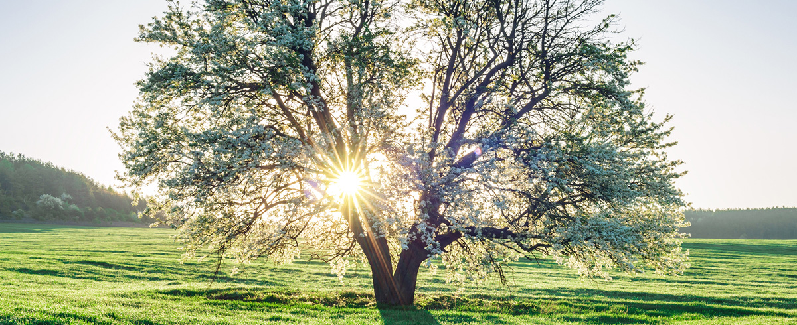
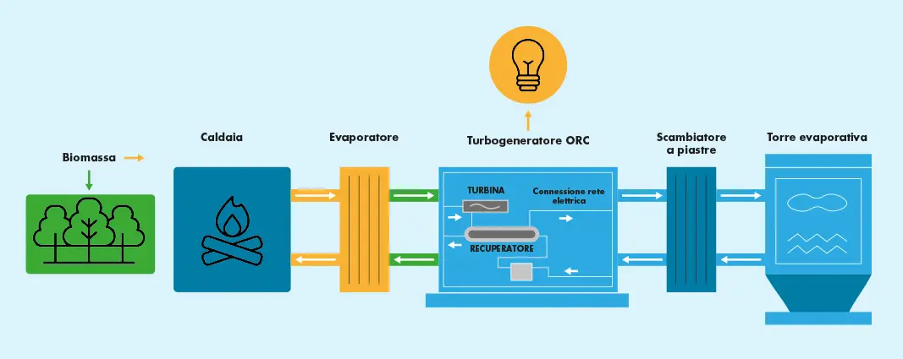

Energia dalle biomasse
La richiesta di energia mondiale continua a crescere sempre di più, soprattutto quella rinnovabile poiché sostenibile, incentivando sempre di più la produzione di energia dalle biomasse non solo in Europa, ma anche negli Stati Uniti e nell'Asia.
Le biomasse comprendono il materiale organico proveniente da piante - come legno, scarti della produzione agricola, legno e alghe - e animali - come letame e residui degli allevamenti. Ogni tipo di biomassa ha i suoi trattamenti ma ciascuno di essi produce energia pulita, come il biogas, vapore, bio-oil e molte altre energie.
Le biomasse si suddividono in tre tipi principali:
- Biomasse vegetali: che comprendono gli scarti di attività agricole, forestali o giardinaggio come il legno, gusci, torsoli, bucce e vinacce.
- Biomasse animali: composte principalmente dal letame, contente gas ed energia chimica proveniente dell'erba della dieta degli animali stessi. Un altra biomassa animale sono le carcasse, poste alla combustione per produrre calore o energia elettrica.
- Biomasse microbiche: queste sono elementi, provenienti dal terreno, come zolfo, azoto, funghi, batteri e microbi.
I diversi processi per ricavare l'elettricità
In base alle caratteristiche e alla natura della biomassa stessa, esistono diversi modi per ricavare energia elettrica tramite questa fonte. I processi di conversione al giorno d'oggi includono:
-
Processi termici, che sfruttano l'utilizzo di sorgenti di calore per rilasciare l'energia
delle biomasse. Questi processi si suddividono in:
- Combustione: si brucia la biomassa per ottenere calore e vapore, a loro volta utilizzati negli impianti dedicati per la produzione di energia elettrica.
- Torrefazione: l'energia della biomassa è rilasciata dal riscaldamento della stessa.
-
Processi gassosi, che sfruttano il gas prodotto dalle biomasse tramite:
- Gassificazione: la biomassa viene convertita in syngas, un gas sintetico, per essere utilizzate come fonte di energia elettrica o biocarburanti liquidi.
- Digestione anaerobica: organismo anaerobici, che vivono senza la presenza di ossigeno, digeriscono le biomasse e producono biogas.
-
Processi chimici, che utilizza la chimica per ricavare energia con:
- Pirolisi: la biomassa viene chimicamente scomposto per produrre bio-oil o biochar,
- Liquefazione: la biomassa viene trasformata in un liquido tramite il processo di estrazione chimica.
Vantaggi
- Le biomasse sono una fonte di energia rinnovabile, disponibili in modo continuo e rigenerabili attraverso pratiche agricole sostenibili.
- La loro combustione emette meno gas serra rispetto ai combustibili fossili, riducendo le emissioni nocive nell'atmosfera.
- L'uso delle biomasse può contribuire alla riduzione dei rifiuti organici inviati in discarica e creare opportunità di lavoro locale.
- Offrono un'alternativa ai combustibili fossili, contribuendo alla diversificazione dell'approvvigionamento energetico.
Svantaggi
- La combustione delle biomasse può produrre inquinanti atmosferici come particolato, ossidi di azoto e di zolfo, contribuendo all'inquinamento dell'aria.
- La coltivazione intensiva delle biomasse può portare a problemi ambientali come la deforestazione e la conversione di terreni agricoli, oltre a competere con la produzione di cibo, influenzando la sicurezza alimentare.
- La combustione delle biomasse può avere un'efficienza energetica inferiore rispetto ad altre fonti rinnovabili e richiedere costi aggiuntivi di trasporto.
- Inquinamento associato alle biomasse: La combustione delle biomasse rilascia CO2 nell'atmosfera e produce particolato atmosferico e sostanze nocive come idrocarburi policiclici aromatici (IPA), con effetti negativi sulla salute umana e sull'ambiente.
L'energia delle biomasse in Italia
Negli ultimi dieci anni, la produzione di elettricità da biomasse in Italia ha sperimentato una crescita significativa, diventando la fonte rinnovabile con lo sviluppo più rapido dopo l'eolico, il solare e fotovoltaico. Attualmente, il Paese conta più di 2.700 impianti a biogas e biomassa, con una produzione complessiva che supera i 19.562.000 MWh, rappresentando circa il 6% del consumo energetico nazionale nel 2019 secondo i Dati Generali Terna. Le regioni più attive in questo settore sono la Lombardia, il Veneto e l'Emilia-Romagna. È degno di nota il fatto che ogni tonnellata di biomassa legnosa può generare fino a un megawattora di energia elettrica.
Come procede nel mondo il mercato delle biomasse?
Per prima cosa, in generale, l'adozione delle biomasse come fonte di energia rinnovabile è in crescita a livello mondiale, con sempre più paesi che investono in questa tecnologia e sviluppando politiche per promuoverne l'uso. Stando ad un rapporto pubblicato da The Brainy Insights, il mercato mondiale della produzione di energia da biomasse dovrebbe passare dai 47 miliardi circa del 2021 agli 84,8 miliardi di dollari attesi entro il 2030.
In Europa, la Svezia, la Finlandia e la Lettonia sono all'avanguardia nell'uso della biomassa per l'energia, con la Svezia che spicca per il 63% dell'energia da fonti rinnovabili, principalmente biomasse, idroelettrico ed eolico. La Germania sta adottando una strategia più sostenibile nell'uso della biomassa, con l'obiettivo di utilizzarla in modo più rispettoso dell'ambiente, ad esempio per la produzione di materiali da costruzione o mobili, riservandola come risorsa energetica solo come ultima opzione. In Italia, l'uso della biomassa per l'energia è in crescita, anche se non ancora al livello di altri paesi europei.
Negli Stati Uniti, la biomassa rappresenta circa il 5% del consumo totale di energia primaria, con biocarburanti (etanolo) come fonte principale, seguiti da biomassa legnosa e biomassa da rifiuti solidi urbani e agricoli. In Asia, il Giappone e la Cina stanno incrementando l'uso delle energie rinnovabili, con la Cina che mira alla neutralità carbonica entro il 2060 e produce ogni anno oltre 900 milioni di tonnellate di biomassa agricola e forestale, di cui 90 milioni vengono utilizzati per la produzione di energia.
Vantaggi
- Riduzione delle emissioni di carbonio
- Creazione di posti di lavoro
Svantaggi
- Concorrenza con l'agricoltura alimentare
- Confronto con altre fonti di energia rinnovabile
Come funziona una centrale elettrica a biomasse
La combustione di materiali organici, legno, scarti agricoli, rifiuti organici e residui forestali avviene all’interno delle centrali elettriche a biomasse e biogas, dove si mette in moto il processo di produzione e trasformazione in elettricità.
Ecco in breve come funziona un impianto di biomasse:
Si parte sempre dall’approvvigionamento e dalla raccolta da varie fonti, come foreste gestite in modo responsabile, residui agricoli o scarti organici da attività umane, della biomassa.
Una volta a disposizione, il materiale viene sottoposto a un pre-trattamento, che può includere processi di triturazione, essiccazioneper migliorare la sua gestibilità e il suo potere calorifico.
Dopo essere stata pre-trattata, la biomassa viene bruciata in una caldaia ad alta temperatura. Durante la combustione, rilascia calore che trasforma l’acqua in vapore ad alta pressione.
Il vapore ad alta pressione fa girare le pale di una turbina collegata a un generatore. Ed è proprio la rotazione della turbina a generare energia elettrica.
In alcuni impianti a biomasse, si adotta anche il sistema di cogenerazione. In questo caso, l’energia termica prodotta durante la combustione della biomassa viene utilizzata per scopi diversi dall’elettricità, come il riscaldamento degli edifici o l’approvvigionamento di acqua calda, rendendo così il processo più efficiente ed economico.
Il cogeneratore a biomasse
- Più efficienza: Sfruttare sia l’energia elettrica che quella termica prodotta dalla stessa fonte di biomassa aumenta l’efficienza globale dell’impianto.
- Minori emissioni: La cogenerazione a biomassa riduce le emissioni di CO2, poiché si sfrutta l’energia residua che altrimenti andrebbe persa.
- Maggiore indipendenza energetica: La cogenerazione permette di utilizzare l’energia termica per scopi locali, riducendo la dipendenza da altre fonti di riscaldamento
Scopri di più


Autori
- Cristiano Vicari
- Costanza Leone Maria
- Ilaria Scattina
- Massimiliano Patti
- Giuseppe Di Muni
- Giuseppe Sollima